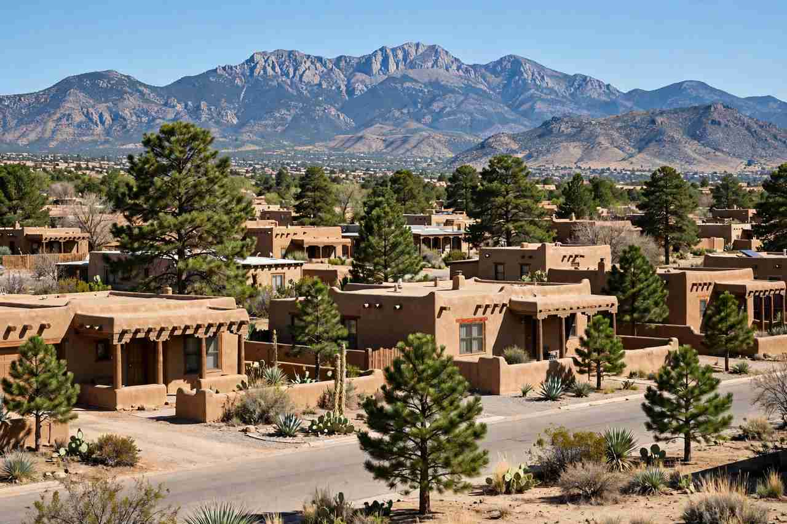

Rodent Control · Wagon Mound, NM
Fast Rodent Control in Wagon Mound, NM
Hearing scratching at night or finding droppings in Wagon Mound? Murvo is a rodent-only specialist offering same-day service from local crews. We identify the species, remove the infestation, clean up the mess, and exclude rodents for good. Pricing is flat-rate and quoted in writing, the work is guaranteed in writing, and coverage extends across Mora County for homes and businesses alike. Local crews cover 1 ZIP codes in the Wagon Mound area, from Watrous to the far side of Mora County.
24/7Availability
1ZIP codes covered
Same-dayResponse
Licensed · Upfront options · Written guarantees · Fully insured
Wagon Mound at a glance
Local Rodent Control for Wagon Mound, NM.
Mora County
Countynortheast New Mexico
RegionSanta Fe · 75 mi
Nearest metro72 miles east of Santa Fe
From Santa Fe1
ZIP codes covered Service by service in Wagon Mound
Rodent Control Services Available in Wagon Mound
The full range of residential and commercial rodent services in Wagon Mound and Mora County - built around the species and housing here, from emergency removal and same-day control to exclusion, proofing, trapping, cleanup, and damage repair. Every service below is quoted flat-rate in writing and backed by our workmanship guarantee.
- 01Rodent Control↗
- 02Rodent Inspection↗
- 03Rodent Removal↗
- 04Rodent Exclusion↗
- 05Rodent Proofing↗
- 06Rat Control↗
- 07Mice Control↗
- 08Mouse Removal↗
- 09Rat Removal↗
- 10Rodent Trapping↗
- 11Rodent Baiting↗
- 12Rodenticide Application↗
- 13Attic Rodent Removal↗
- 14Crawl Space Rodent Removal↗
- 15Wall Rodent Removal↗
- 16Kitchen Rodent Control↗
- 17Garage Rodent Control↗
- 18Commercial Rodent Control↗
- 19Residential Rodent Control↗
- 20Emergency Rodent Removal↗
- 21Same-Day Rodent Control↗
- 22Rodent Damage Repair↗
- 23Rodent Waste Cleanup↗
- 24Rodent Disinfection↗
- 25Rodent Odor Removal↗
- 26Dead Rodent Removal↗
- 27Rodent Dropping Cleanup↗
- 28Rodent Exclusion for Roofs↗
- 29Rodent Exclusion for Vents↗
- 30Rodent Exclusion for Chimneys↗
Rodent Control in Wagon Mound
Rodent Control in Wagon Mound
Most Wagon Mound calls start with a sound nobody can place, then droppings confirm what the noise suggested. Murvo treats rodent control as a sequence, not a single visit: find the species, clear what is inside, close what let it in. Before any work begins, you approve a flat-rate written quote.
In Wagon Mound, rodent control is not a generic spray-and-go service. Rodents exploit rooflines and attic vents, garage gaps, AC and pool equipment enclosures, and openings around parked vehicles and stored items in desert-edge single-family homes, historic adobe and older in-town homes, and homes with mature desert landscaping, and a fix that ignores those routes does not last. Murvo's Wagon Mound team inspects first, shows you the evidence - droppings, gnaw marks, entry gaps - and then lays out the work with a flat-rate written quote. We serve all of Mora County from Wagon Mound, including Watrous, Springer, and every job is covered by our written workmanship guarantee. The Wagon Mound crews who handle rodent control also handle the follow-through - proofing, cleanup, and monitoring - so one visit can close the whole problem.
We start by identifying whether Pack rat (Neotoma spp.), Roof rat (Rattus rattus), or both are active, because each species nests, feeds, and travels differently. Traps are placed on proven runways along walls, beams, and pipe runs, checked on schedule, and adjusted as catches change. Once numbers fall, exclusion sealing closes the route back in, droppings and nesting debris are removed hygienically, and follow-up monitoring checks the attic, crawl space, and kitchen until readings stay clear. Nothing is sealed while animals remain inside. That order protects your home.
Booking takes one call, and same-day appointments are available in most Wagon Mound areas. Work is carried out in stages, with trap checks and sealing visits booked ahead. At the final visit we walk the finished work together and confirm monitoring is clear. Your technician inspects first, talks you through the plan in plain language, and only starts once you approve the written quote. Questions are answered at every stage, day or night.
Need help quickly in Wagon Mound? Call any time — the emergency line is staffed 24/7, and same-day rodent control appointments are available in most areas. We inspect first, explain the plan in plain language, and put the flat rate in writing before work starts. If you are seeing signs now, an inspection this week is the fastest way to know which situation you are in.
The honest answer is that it depends on species, activity level, and how much sealing your home needs, which is why Murvo inspects first and then gives you a flat-rate quote in writing. For national context only, Angi's 2026 data averages rat and mouse removal and control at $396, typically $189 to $655; that is not a Murvo price, and your written quote is the figure you pay.
Rodent Inspection in Wagon Mound
Rodent Inspection in Wagon Mound
What should you expect to hold afterwards? Photographs, a species identification, a map of entry points, and priorities you can act on in stages. That is a Murvo rodent inspection in Wagon Mound: licensed and insured, unhurried, and honest about separating urgent problems from minor weaknesses that can safely wait.
Homeowners in Wagon Mound call Murvo for rodent inspection because the problem here is specific: Pack rat (Neotoma spp.) pressure around desert-edge single-family homes, historic adobe and older in-town homes, and homes with mature desert landscaping, tight access at rooflines and attic vents, garage gaps, AC and pool equipment enclosures, and openings around parked vehicles and stored items, and activity that follows the local season. Our Mora County crews diagnose the real source before recommending work, explain the options in plain language, and quote one flat rate in writing. Across Wagon Mound - including Watrous, Springer - every visit is backed by licensed, insured technicians and our written workmanship guarantee. Around Watrous, Springer, Roy, the pattern is similar: Roof rat (Rattus rattus) finds rooflines and attic vents, garage gaps, AC and pool equipment enclosures, and openings around parked vehicles and stored items first, and lasting rodent inspection has to close those routes.
Think of the inspection as three passes. The exterior pass checks siding, vents, pipe entries, and roof junctions for gaps and rub marks. The interior pass covers attic insulation, crawl-space corners, and kitchen voids for droppings, nests, and gnawing. The review pass brings it together: species, likely numbers, contamination, and the order in which fixes should happen. Each pass is photographed, and nothing is recommended without evidence from one of those passes to support it. The report separates what rodents are doing now from what the structure merely allows them to do later.
Booking a rodent inspection in Wagon Mound takes one call, and same-day appointments are often available. Nothing proceeds without your approval, and urgent items are clearly flagged. Your technician arrives on time, walks the property with you, and inspects the attic, crawl space, and exterior in one visit. Findings are explained with photos before you receive a flat-rate written quote for any recommended work. You keep the full written report either way.
You do not have to wait days for answers in Wagon Mound. Same-day rodent inspection appointments are available in most areas, urgent calls are taken 24/7, and most home inspections take under an hour. You finish the visit with photos, written findings, and flat-rate pricing for anything we recommend. In Mora County, activity follows the local season, so timing the work matters as much as the method.
Your exact rodent inspection price is confirmed before we visit, and any follow-up work is quoted as a flat rate in writing after the inspection — no hourly billing. For context, Angi's 2026 data puts a professional rodent inspection nationally at $100 to $200, often credited toward the job if you proceed.
Rodent Removal in Wagon Mound
Rodent Removal in Wagon Mound
Most Wagon Mound removal calls start after a homeowner has already tried a store-bought trap and caught nothing. The difference is placement and persistence. Murvo locates nests first, sets traps on confirmed routes for Pack rat (Neotoma spp.) and Roof rat (Rattus rattus), returns until catches end, and quotes the whole program as one flat-rate written quote.
Homeowners in Wagon Mound call Murvo for rodent removal because the problem here is specific: Pack rat (Neotoma spp.) pressure around desert-edge single-family homes, historic adobe and older in-town homes, and homes with mature desert landscaping, tight access at rooflines and attic vents, garage gaps, AC and pool equipment enclosures, and openings around parked vehicles and stored items, and activity that follows the local season. Our Mora County crews diagnose the real source before recommending work, explain the options in plain language, and quote one flat rate in writing. Across Wagon Mound - including Watrous, Springer - every visit is backed by licensed, insured technicians and our written workmanship guarantee. Coverage for rodent removal spans 1 ZIP codes in Mora County, including 87752.
Removal here is measured in records, not impressions. That log shows where activity concentrates, where it is fading, and where a placement needs to move. When the log stays empty across repeat checks, removal is genuinely finished. Sealing recommendations follow immediately, because a clear home with open gaps will not stay clear for long in Wagon Mound. Each trap is numbered, mapped, and checked on schedule, and every catch is logged against its location. That record also protects you, because it shows exactly when activity ended rather than when visits simply stopped.
Once you book rodent removal in Wagon Mound, we agree a time window and your technician arrives with traps, protective equipment, and a clear plan. Progress is photographed and shared with you throughout the program. The first visit confirms activity and sets traps; return visits clear and reset them on schedule. When catches reach zero, we walk through the results, discuss sealing, and confirm your written guarantee before closing the job. Nothing is left unexplained.
When rodents are active indoors in Wagon Mound, waiting rarely helps. Rodent removal can usually start the same day you call, our line answers 24/7 for a rodent loose in a living area, and the first visit sets traps straight away. Scheduled returns then clear and reset them until monitoring shows the home is clear. In Mora County, most cases involve the Pack rat (Neotoma spp.) and the Roof rat (Rattus rattus), so the inspection focuses on their routes first.
Cost depends on the species, how many animals are active, and how much sealing the home needs afterwards, so Murvo inspects first and quotes one flat rate in writing. For national context only, Angi's 2026 data averages rat and mouse removal at $396, typically $189 to $655. That benchmark is not a Murvo price; your written quote is the exact figure.
Rodent Exclusion in Wagon Mound
Rodent Exclusion in Wagon Mound
In desert-edge single-family homes, historic adobe and older in-town homes, and homes with mature desert landscaping, exclusion is detective work as much as building work. Rub marks at rooflines and attic vents, garage gaps, AC and pool equipment enclosures, and openings around parked vehicles and stored items, droppings below a vent, and daylight under a door each point somewhere different in Mora County homes. Our technicians follow those clues for Pack rat (Neotoma spp.) and Roof rat (Rattus rattus), prioritize active openings, and leave inactive weaknesses clearly noted.
Homeowners in Wagon Mound call Murvo for rodent exclusion because the problem here is specific: Pack rat (Neotoma spp.) pressure around desert-edge single-family homes, historic adobe and older in-town homes, and homes with mature desert landscaping, tight access at rooflines and attic vents, garage gaps, AC and pool equipment enclosures, and openings around parked vehicles and stored items, and activity that follows the local season. Our Mora County crews diagnose the real source before recommending work, explain the options in plain language, and quote one flat rate in writing. Across Wagon Mound - including Watrous, Springer - every visit is backed by licensed, insured technicians and our written workmanship guarantee. Homes near Watrous tend to show activity first in Wagon Mound, which is why inspections start with rooflines and attic vents, garage gaps, AC and pool equipment enclosures, and openings around parked vehicles and stored items.
Start with a hard rule: nothing gets sealed while animals remain inside. Technicians confirm the home is clear through trapping and monitoring, then survey the structure junction by junction, because seams between materials open as buildings settle. Each opening receives its own treatment, from packed copper mesh in irregular gaps to hardware cloth across vents and flashing at roof junctions. Door sweeps close the obvious routes, and smaller cracks receive durable sealant chosen for exterior exposure. A written inventory ties each photograph to a location, so future checks can revisit precisely the same points.
Before sealing day, confirm pets are secured and access to the roofline and foundation is clear. The crew then works through the agreed list, checks that no animals remain inside, and fits each seal cleanly. Afterwards you receive the photographs, the guarantee, and a date for the follow-up check that confirms everything is holding as intended. If monitoring ever finds fresh activity at a sealed point, that written inventory tells us exactly what to inspect first.
The first step is a survey, and in Wagon Mound we can often schedule that survey the same day you call about rodent exclusion. Sealing follows once active animals are cleared — nothing is ever sealed inside — and most homes are fully sealed within days, with entry points near wiring or food areas handled first. The written quote for your Wagon Mound property will spell out exactly which of these applies before any work starts.
For national context, Angi's 2026 data puts basic exclusion at $200 to $600, depending on access and the number of openings. That is a benchmark, not a Murvo price. After surveying your Wagon Mound home, we list every opening that needs sealing and quote one flat rate in writing, so you pay for the work your property actually needs and nothing more.
Rodent Proofing in Wagon Mound
Rodent Proofing in Wagon Mound
Proofing matters most where rodent pressure stays high all year: older desert-edge single-family homes, historic adobe and older in-town homes, and homes with mature desert landscaping in Wagon Mound, homes near fields, water, or dense vegetation, and properties with cluttered garages or overhanging branches. Our plan separates quick wins you can handle yourself from specialist sealing that needs professional materials, keeping the whole program practical, transparent, and easy to stage over time.
Homeowners in Wagon Mound call Murvo for rodent proofing because the problem here is specific: Pack rat (Neotoma spp.) pressure around desert-edge single-family homes, historic adobe and older in-town homes, and homes with mature desert landscaping, tight access at rooflines and attic vents, garage gaps, AC and pool equipment enclosures, and openings around parked vehicles and stored items, and activity that follows the local season. Our Mora County crews diagnose the real source before recommending work, explain the options in plain language, and quote one flat rate in writing. Across Wagon Mound - including Watrous, Springer - every visit is backed by licensed, insured technicians and our written workmanship guarantee. Coverage for rodent proofing spans 1 ZIP codes in Mora County, including 87752.
Proofing divides naturally into structure, surroundings, and habits. Habits means securing pet food, bird seed, and stored produce so the property stops advertising itself. Structure means sealing utility entries, screening vents and chimneys, and fitting sweeps where doors leak light. Surroundings means trimming branches back from the roofline, moving clutter and timber away from walls, and reducing sheltered harborage. Technicians assess all three layers in one survey and rank the combined findings by impact, not by what is easiest to sell.
After booking, we confirm your appointment and any access needs, such as gates or attic hatches. Later re-checks verify sweeps, screens, and seals are still holding. On the day, your background-checked technician completes the survey and agreed proofing work in one visit where possible. Before leaving, you walk the finished sealing together, receive care and storage advice, and confirm the guarantee. Nothing is added to your bill without approval first.
Rodent proofing is preventive, so there is rarely a rush, but surveys in Wagon Mound can often be arranged the same day you call, and always within a few days. Most proofing work is completed in a single visit once you approve the plan, and booking before colder weather gives your home protection ahead of the seasonal rush indoors. In Mora County, activity follows the local season, so timing the work matters as much as the method.
We survey your Wagon Mound property first, separate the quick wins you can handle yourself from the specialist sealing, and quote the professional work as one flat rate in writing so spending can be staged. Angi's 2026 national context puts exclusion, the core of proofing, at $200 to $600 for basic work — a benchmark only, not a Murvo price.
Rat Control in Wagon Mound
Rat Control in Wagon Mound
Most Wagon Mound rat calls start with evidence in the attic: droppings too large for mice, greasy rub marks, insulation tunneled overnight. Murvo identifies whether Pack rat (Neotoma spp.) or Roof rat (Rattus rattus) is responsible, maps nightly routes, and builds control around trapping and exclusion. One flat-rate written quote is approved before work begins.
Homeowners in Wagon Mound call Murvo for rat control because the problem here is specific: Pack rat (Neotoma spp.) pressure around desert-edge single-family homes, historic adobe and older in-town homes, and homes with mature desert landscaping, tight access at rooflines and attic vents, garage gaps, AC and pool equipment enclosures, and openings around parked vehicles and stored items, and activity that follows the local season. Our Mora County crews diagnose the real source before recommending work, explain the options in plain language, and quote one flat rate in writing. Across Wagon Mound - including Watrous, Springer - every visit is backed by licensed, insured technicians and our written workmanship guarantee. Around Watrous, Springer, Roy, the pattern is similar: Roof rat (Rattus rattus) finds rooflines and attic vents, garage gaps, AC and pool equipment enclosures, and openings around parked vehicles and stored items first, and lasting rat control has to close those routes.
Safety shapes every placement decision. Where bait is genuinely necessary outdoors, it goes only inside locked, tamper-resistant stations, secured and labeled, never loose, and always alongside trapping and sealing rather than instead of them. Droppings are handled carefully: surfaces are disinfected before cleaning, never dry-swept, because disturbing dry material can spread contamination through the air. Traps are positioned away from pet routes and play areas and explained to the household in advance. Households receive that safety briefing in plain terms before the first station or trap is ever left behind.
Call for rat control in Wagon Mound and we will book an inspection, often the same day for active problems. Trapping visits then run on a set schedule, with placements adjusted as activity shifts. The job closes only when monitoring confirms rats are gone and exclusion is complete. Your technician maps routes and harborage, explains the trapping plan, and gives you a flat-rate written quote before any work begins. Your guarantee is confirmed in writing.
Rats do not wait, and neither do we: rat control in Wagon Mound can usually start with a same-day inspection, and urgent calls are answered 24/7. Pre-baiting begins on the first visit once you approve the written quote, traps are set as soon as rats are feeding confidently, and scheduled checks keep the program moving until activity stops. If you are seeing signs now, an inspection this week is the fastest way to know which situation you are in.
Rat work varies with species, colony size, and how many entry points need sealing, so Murvo inspects first and quotes one flat rate in writing. For national context only, Angi's 2026 data averages rat control and removal at $396, typically $189 to $655. That benchmark is not a Murvo price; the written quote for your Wagon Mound home is the exact figure you pay.
Mice Control in Wagon Mound
Mice Control in Wagon Mound
Small rice-like droppings, shredded nesting material, and faint scratching after dark are the classic signs mice have moved into a Wagon Mound home. Murvo's mice control surveys activity and entry points, traps in clusters along the routes mice travel nightly, and seals gaps as small as a pencil width. One flat-rate written quote covers the program before work begins.
Homeowners in Wagon Mound call Murvo for mice control because the problem here is specific: Pack rat (Neotoma spp.) pressure around desert-edge single-family homes, historic adobe and older in-town homes, and homes with mature desert landscaping, tight access at rooflines and attic vents, garage gaps, AC and pool equipment enclosures, and openings around parked vehicles and stored items, and activity that follows the local season. Our Mora County crews diagnose the real source before recommending work, explain the options in plain language, and quote one flat rate in writing. Across Wagon Mound - including Watrous, Springer - every visit is backed by licensed, insured technicians and our written workmanship guarantee. Coverage for mice control spans 1 ZIP codes in Mora County, including 87752.
Hygiene is part of control, not an afterthought. Droppings in cabinets are never dry-swept; surfaces are disinfected first, following careful practice, so contamination is not pushed into the air, and nesting debris is bagged and removed. Technicians also review how food, pet supplies, and bird seed are stored, since an open supply restarts activity quickly. The program favors traps over bait throughout, which keeps family kitchens safer and makes every result countable and visible. Follow-up monitoring then verifies the kitchen, attic, and voids together, rather than treating each room in isolation.
Book mice control in Wagon Mound with one call, and same-day visits are available in many areas. Trap checks are scheduled before we leave, and a follow-up visit confirms activity has stopped before the job is signed off. Your technician surveys the kitchen, attic, and voids, explains where mice are traveling, and gives you a flat-rate written quote before setting a single trap. Everything is explained in plain language for your household.
Mice programs move quickly in Wagon Mound: a mice control survey can often be arranged the same day you call, and traps are set on that first visit once you approve the quote. Because mice investigate new objects fast, catches usually begin quickly, and scheduled check visits follow until a final confirmation shows activity has fully stopped. In Mora County, activity follows the local season, so timing the work matters as much as the method.
Mouse work is priced by the number of rooms affected and the amount of sealing involved, so Murvo surveys first and quotes one flat rate in writing. For national context only, Angi's 2026 data averages rat and mouse control and removal at $396, typically $189 to $655. That is not a Murvo price; your written quote is exact.
Mouse Removal in Wagon Mound
Mouse Removal in Wagon Mound
Mice nest where it is warm and undisturbed: attics, wall voids, crawl spaces, and behind kitchen cabinets in desert-edge single-family homes, historic adobe and older in-town homes, and homes with mature desert landscaping across Wagon Mound. They feed close to those nests, following rooflines and attic vents, garage gaps, AC and pool equipment enclosures, and openings around parked vehicles and stored items and pipe runs between rooms. Our technicians check warm spots near water heaters and appliances where mice raise young, so no nesting site is missed during removal.
Homeowners in Wagon Mound call Murvo for mouse removal because the problem here is specific: Pack rat (Neotoma spp.) pressure around desert-edge single-family homes, historic adobe and older in-town homes, and homes with mature desert landscaping, tight access at rooflines and attic vents, garage gaps, AC and pool equipment enclosures, and openings around parked vehicles and stored items, and activity that follows the local season. Our Mora County crews diagnose the real source before recommending work, explain the options in plain language, and quote one flat rate in writing. Across Wagon Mound - including Watrous, Springer - every visit is backed by licensed, insured technicians and our written workmanship guarantee. Coverage for mouse removal spans 1 ZIP codes in Mora County, including 87752.
Trap-based removal is the default here for practical reasons. It is safer around children and pets, results are visible and countable, and no animal is left to die inside a hidden void. Cleanup follows the same care: droppings and nesting are never dry-swept, surfaces are disinfected first, and waste is bagged and removed hygienically. Once activity ends, access points are sealed thoroughly, and advice on storage and scent-trail cleaning helps the kitchen stay clear. Monitoring after sealing confirms the finish, so the result rests on evidence rather than a hopeful guess.
As catches fall, the focus shifts in order: final clearing, disinfection of affected areas, then sealing of access points. Your technician reviews the catch record with you at sign-off, confirms which rooms are fully safe to use, and leaves prevention advice plus guarantee paperwork. Seasonal proofing can be arranged if your property has repeated fall problems. If signs reappear during monitoring, placements are restored under the same agreed program rather than starting a new conversation from scratch.
In Wagon Mound, mouse removal can often begin the same day you call, especially where mice are active in kitchens or living areas. The first visit surveys nesting sites and sets traps immediately after you approve the quote; because mice investigate traps quickly, catches usually start fast, and return visits continue until numbers reach zero. If you are seeing signs now, an inspection this week is the fastest way to know which situation you are in.
Rooms involved and sealing needed determine the cost of removal, so we survey first and agree a flat rate in writing before work begins. As national context only, Angi's 2026 data averages rat and mouse removal at $396, with a typical range of $189 to $655; that benchmark is not a Murvo price, and your written quote covers your exact program.
Rat Removal in Wagon Mound
Rat Removal in Wagon Mound
If rats are active in your Wagon Mound home right now, Murvo offers a same-day response and a clear written plan, with lines open 24/7 for urgent cases. Removal is delivered as one coordinated job: trapping, hygienic disposal, prevention, and a final walkthrough with monitoring evidence, so you are never asked to simply take our word that activity ended.
In Wagon Mound, rat removal is not a generic spray-and-go service. Rodents exploit rooflines and attic vents, garage gaps, AC and pool equipment enclosures, and openings around parked vehicles and stored items in desert-edge single-family homes, historic adobe and older in-town homes, and homes with mature desert landscaping, and a fix that ignores those routes does not last. Murvo's Wagon Mound team inspects first, shows you the evidence - droppings, gnaw marks, entry gaps - and then lays out the work with a flat-rate written quote. We serve all of Mora County from Wagon Mound, including Watrous, Springer, and every job is covered by our written workmanship guarantee. Coverage for rat removal spans 1 ZIP codes in Mora County, including 87752.
Scale determines everything, so assessment precedes action. Pre-baiting unset traps then builds feeding confidence in these naturally cautious animals. Once set, traps are checked frequently, animals are removed hygienically, and placements shift as activity contracts toward its last pockets. Attic colonies receive dedicated work overhead, while any carcass in a void is retrieved before odor develops. Technicians establish species, estimate colony size from droppings and runways, and locate harborage before placing a single trap. Visit notes record weather and access too, since both affect rat movement and help explain any slower nights.
Help the program by securing food, clearing access to the attic or basement, and leaving traps exactly where placed. Your background-checked technician handles removal, adjustments, sanitation, and the final monitoring period. Sign-off includes the documented evidence, your guarantee in writing, and practical proofing guidance tailored to how rats reached your property in the first place. You also receive guidance on drains, vegetation, and storage specific to your property, aimed at discouraging the next colony from settling.
Rats in a living area cannot wait for a routine slot. In Wagon Mound, rat removal can usually start the same day you call and our line answers 24/7 for urgent cases. Pre-baiting starts on the first visit after you approve the written quote, traps are set once rats feed confidently — typically within days — and frequent returns run until monitoring confirms the colony is gone. Around Wagon Mound, desert-edge single-family homes, historic adobe and older in-town homes, and homes with mature desert landscaping give rodents the most cover, which is why entry points get checked before traps are set.
Colony size, access, and the sealing needed afterwards drive the price, so Murvo assesses the property first and quotes a flat rate in writing covering the full program. Angi's 2026 data, for national context only, averages rat removal at $396 and typically ranges from $189 to $655; that is a benchmark, not a Murvo price.
Rodent Trapping in Wagon Mound
Rodent Trapping in Wagon Mound
Trapping is the most accountable way to clear rodents: every catch is counted, located, and recorded. Murvo's rodent trapping in Wagon Mound places traps perpendicular to walls and along beams, pipes, and fence lines where rodents actually travel, using snap traps, multi-catch devices, or live-capture options as the situation requires. You approve one flat-rate written quote before we start.
In Wagon Mound, rodent trapping is not a generic spray-and-go service. Rodents exploit rooflines and attic vents, garage gaps, AC and pool equipment enclosures, and openings around parked vehicles and stored items in desert-edge single-family homes, historic adobe and older in-town homes, and homes with mature desert landscaping, and a fix that ignores those routes does not last. Murvo's Wagon Mound team inspects first, shows you the evidence - droppings, gnaw marks, entry gaps - and then lays out the work with a flat-rate written quote. We serve all of Mora County from Wagon Mound, including Watrous, Springer, and every job is covered by our written workmanship guarantee. In Wagon Mound, rodent trapping calls most often involve desert-edge single-family homes, historic adobe and older in-town homes, and homes with mature desert landscaping, where rooflines and attic vents, garage gaps, AC and pool equipment enclosures, and openings around parked vehicles and stored items decide whether the fix holds.
Trap selection covers snap traps for quick, humane dispatch, multi-catch devices for busy mouse routes, and live-capture options where you prefer release away from the home. Baits and lures are matched to species and location, and all devices are positioned with pet and child safety in mind and explained to your household. As catches fall, we recommend exclusion sealing, plus droppings cleanup for affected areas, moving the program from active trapping to monitoring and final sign-off. Every device location is mapped for you.
Between checks, leave devices untouched and note any new noises or droppings by room; that information sharpens the next visit. Your background-checked technician adjusts placements as the pattern changes and removes catches promptly and hygienically. The program ends with a clear monitoring result, a written summary of what was caught where, and sealing advice. The summary also notes which routes stayed busiest, information that makes any later exclusion work faster and more precisely targeted.
In Wagon Mound, a rodent trapping program can usually start the same day you call, with traps placed or pre-baiting begun on the first visit after you approve the quote. Mice often investigate within the first night, while wary rats need a few days of pre-baiting before traps are set. Scheduled checks then keep the program moving until numbers reach zero. The written quote for your Wagon Mound property will spell out exactly which of these applies before any work starts.
Rather than charging by the trap or by the visit, Murvo inspects first and quotes rodent trapping as one flat rate in writing for the complete program, including its check visits. Price depends on species, activity level, and how many checks are needed, and there is no hourly billing at any stage, so there are no per-visit surprises.
Rodent Baiting in Wagon Mound
Rodent Baiting in Wagon Mound
State rules shape how baiting works in New Mexico: some states restrict anticoagulant rodenticides, and Murvo follows the strictest applicable limits on every job. Before any station is placed at your Wagon Mound property, a technician maps activity, reviews pet and child concerns with you, and explains exactly what to watch for between monitoring visits. Nothing is placed without that conversation.
When you need rodent baiting in Wagon Mound, the job starts with what is actually happening in your part of Mora County. Murvo crews work Wagon Mound every week, so they know how Pack rat (Neotoma spp.) and Roof rat (Rattus rattus) behave around desert-edge single-family homes, historic adobe and older in-town homes, and homes with mature desert landscaping here - and where they get in: rooflines and attic vents, garage gaps, AC and pool equipment enclosures, and openings around parked vehicles and stored items. We arrive equipped for the full job, confirm the flat rate in writing before work begins, and cover the whole Wagon Mound area, including Watrous, Springer. No call-center runaround and no open-ended hourly billing - just a local crew, a clear plan, and a written quote you approve first. Around Watrous, Springer, Roy, the pattern is similar: Roof rat (Rattus rattus) finds rooflines and attic vents, garage gaps, AC and pool equipment enclosures, and openings around parked vehicles and stored items first, and lasting rodent baiting has to close those routes.
Where baiting is not appropriate indoors, we say so, and recommend trapping first followed by proofing of gaps around pipes, vents, and doors. That exclusion-first approach reduces reliance on bait over time, which matters for households with children, pets, or visiting wildlife in Wagon Mound. Consumption records from each visit show whether activity is falling, holding, or moving, guiding whether stations stay, move, or come out entirely in favor of sealing and trapping alone. You receive those records after every monitoring visit.
Booking rodent baiting in Wagon Mound starts with an inspection, not a station. Your technician maps activity, reviews pet, child, and wildlife concerns with you, and confirms a flat-rate written quote before anything is placed. Approved stations are installed locked and labeled the same visit, with locations photographed for you. Monitoring visits are scheduled before we leave, and stations come out once activity is confirmed clear. Your written guarantee covers the full program.
Deliberate setup matters more than speed with rodent baiting, but the first step is still fast: an inspection in Wagon Mound can often be arranged the same day you call. Stations are placed only after activity is mapped and you approve the written quote and each location, then monitoring runs on a fixed schedule until consumption stops and activity is confirmed clear. Around Wagon Mound, desert-edge single-family homes, historic adobe and older in-town homes, and homes with mature desert landscaping give rodents the most cover, which is why entry points get checked before traps are set.
How many locked stations your property needs and how long monitoring runs determine the cost, so Murvo inspects and maps activity first, then quotes one flat rate in writing covering placement and scheduled checks. There are no per-visit surprises, and because the approach is exclusion-first, the aim is to reduce and eventually remove stations rather than maintain them forever.
Rodenticide Application in Wagon Mound
Rodenticide Application in Wagon Mound
What does the law in New Mexico allow, and what will you be told? State rules restrict certain rodenticides, and Murvo complies with every applicable rule on every job. You receive label and safety information for any product used at your Wagon Mound property before application begins.
Homeowners in Wagon Mound call Murvo for rodenticide application because the problem here is specific: Pack rat (Neotoma spp.) pressure around desert-edge single-family homes, historic adobe and older in-town homes, and homes with mature desert landscaping, tight access at rooflines and attic vents, garage gaps, AC and pool equipment enclosures, and openings around parked vehicles and stored items, and activity that follows the local season. Our Mora County crews diagnose the real source before recommending work, explain the options in plain language, and quote one flat rate in writing. Across Wagon Mound - including Watrous, Springer - every visit is backed by licensed, insured technicians and our written workmanship guarantee. The Wagon Mound crews who handle rodenticide application also handle the follow-through - proofing, cleanup, and monitoring - so one visit can close the whole problem.
The first decision is whether application is justified, and often it is not. Inspection confirms species and activity, then trapping and exclusion are weighed honestly; if those methods can solve the problem safely, they are recommended instead. Where treatment is justified, stations are mapped, anchored, and labeled, products remain inside locked units at all times, and scheduled checks record amounts precisely. Monitoring data then governs whether treatment continues, changes, or stops in favor of proofing alone. If consumption patterns look unusual, technicians investigate rather than simply refilling, because unexpected patterns can signal a different species.
Before the visit, tell us about children, pets, livestock, and wildlife using the property; that information shapes product and placement decisions. On the day, your background-checked technician installs any approved stations locked and labeled, records the details, and explains what to watch for. Scheduled checks follow until activity ends and stations are removed. Label information, amounts, and visit dates stay in your records throughout, so the treatment history is complete and available whenever needed.
In Wagon Mound, rodenticide application begins with an inspection we can often schedule the same day you call, because no responsible application happens without one. If treatment is justified and you approve the written quote, locked stations are installed on that visit. Monitoring then runs on schedule, and treatment stops as soon as data shows activity has ended. If you are seeing signs now, an inspection this week is the fastest way to know which situation you are in.
Application cost depends on the number of locked stations, the product required under New Mexico rules, and how long monitoring runs. Murvo inspects first, explains whether trapping or exclusion could avoid chemical control entirely, and then quotes one flat rate in writing before work begins. The quote covers scheduled monitoring visits, so there are no per-visit surprises later.
Attic Rodent Removal in Wagon Mound
Attic Rodent Removal in Wagon Mound
Removal is only step two for Wagon Mound attics. After trapping clears the animals, Murvo delivers roofline exclusion with metal mesh and sealed flashing, advises on trimming overhanging branches that bridge rats onto your roof, and leaves monitoring traps briefly to confirm nothing was sealed inside. The whole job carries one flat-rate written quote agreed beforehand.
In Wagon Mound, attic rodent removal is not a generic spray-and-go service. Rodents exploit rooflines and attic vents, garage gaps, AC and pool equipment enclosures, and openings around parked vehicles and stored items in desert-edge single-family homes, historic adobe and older in-town homes, and homes with mature desert landscaping, and a fix that ignores those routes does not last. Murvo's Wagon Mound team inspects first, shows you the evidence - droppings, gnaw marks, entry gaps - and then lays out the work with a flat-rate written quote. We serve all of Mora County from Wagon Mound, including Watrous, Springer, and every job is covered by our written workmanship guarantee. Homes near Watrous tend to show activity first in Wagon Mound, which is why inspections start with rooflines and attic vents, garage gaps, AC and pool equipment enclosures, and openings around parked vehicles and stored items.
Attic work follows Inspect, Remove, Exclude, Clean, and Monitor. Targeted, humane trapping is then set in the attic to clear active animals quickly, with checks on schedule. Once clear, roofline entry points are sealed with metal mesh and flashing as part of wider proofing, and dropping cleanup and disinfection are arranged where insulation is contaminated. A detailed inspection covers the attic, roof, and eaves, identifying species, nests, droppings, and gnawed cables. Monitoring traps stay briefly after sealing to confirm the attic is empty and quiet.
Book an attic visit, same-day where wiring damage or heavy activity makes it urgent. Trapping starts after approval, follow-up checks are booked ahead, and sealing plus cleanup complete the sequence before monitoring confirms the result. Your technician inspects overhead and along the roofline, shows you photographs of the evidence, and confirms the written quote. Wiring or insulation concerns are flagged separately in writing, so you can arrange any specialist repairs with clear information in hand.
In Wagon Mound, attic rodent removal visits are often available the same day, and we prioritize attics where chewed wiring creates a fire risk. Trapping starts on the first visit after you approve the written quote, checks run on schedule, and most attics are cleared and sealed within days, with monitoring left briefly to confirm nothing remains inside. In Mora County, activity follows the local season, so timing the work matters as much as the method.
Activity levels, roofline sealing, and whether contaminated insulation needs cleanup all affect attic pricing, so Murvo inspects first and quotes one flat rate in writing for the removal program. Cleanup options are priced separately in writing before you decide, so nothing is added once work is underway.
Crawl Space Rodent Removal in Wagon Mound
Crawl Space Rodent Removal in Wagon Mound
In desert-edge single-family homes, historic adobe and older in-town homes, and homes with mature desert landscaping, the space underneath offers rodents shelter, burrowing ground at vents, and pipe runs reached through rooflines and attic vents, garage gaps, AC and pool equipment enclosures, and openings around parked vehicles and stored items across Mora County. Standing water and leaking pipes raise pressure further, so technicians flag moisture problems during inspection too. Removal also traces wall-void routes upward, because below-house activity often connects to the attic.
When you need crawl space rodent removal in Wagon Mound, the job starts with what is actually happening in your part of Mora County. Murvo crews work Wagon Mound every week, so they know how Pack rat (Neotoma spp.) and Roof rat (Rattus rattus) behave around desert-edge single-family homes, historic adobe and older in-town homes, and homes with mature desert landscaping here - and where they get in: rooflines and attic vents, garage gaps, AC and pool equipment enclosures, and openings around parked vehicles and stored items. We arrive equipped for the full job, confirm the flat rate in writing before work begins, and cover the whole Wagon Mound area, including Watrous, Springer. No call-center runaround and no open-ended hourly billing - just a local crew, a clear plan, and a written quote you approve first. Homes near Watrous tend to show activity first in Wagon Mound, which is why inspections start with rooflines and attic vents, garage gaps, AC and pool equipment enclosures, and openings around parked vehicles and stored items.
Cleanup beneath a home follows careful practice throughout. Droppings and nesting debris are never dry-swept, since disturbing them can spread contamination; surfaces are disinfected first, then waste is bagged and removed by technicians wearing protective equipment. Technicians also trace connections upward through wall voids, checking whether activity reaches the attic, and report moisture issues with practical recommendations. Photographs of every finished seal accompany your guarantee paperwork, creating a record of exactly what was closed. Vent and pier sealing is checked from inside the space, not assumed sound from a glance outside.
Schedule an under-home inspection, usually within days and sooner when odors reach living areas. Your technician photographs conditions below, explains findings in plain language, and confirms the written quote before any trapping. Clearance, vent screening, and cleanup then follow in sequence, with monitoring left in place until the space below is confirmed quiet. Photographs from below the home accompany the final paperwork, which is especially useful because few homeowners ever see that space themselves.
For crawl space rodent removal in Wagon Mound, inspections are usually arranged within a few days — and sooner when odors are drifting into living areas or activity sounds heavy. Trapping begins on the first visit after you approve the written quote, clearance and sealing follow in sequence, and monitoring stays in place until the space below is confirmed quiet. If you are seeing signs now, an inspection this week is the fastest way to know which situation you are in.
Crawl-space costs depend on access, how many vents and gaps need sealing, and whether waste cleanup is required, so Murvo inspects first and quotes one flat rate in writing. If extra vents need sealing within the agreed scope, there are no surprises, and cleanup options are priced in writing before you decide whether to include them.
Wall Rodent Removal in Wagon Mound
Wall Rodent Removal in Wagon Mound
In desert-edge single-family homes, historic adobe and older in-town homes, and homes with mature desert landscaping, wall voids work like private corridors: mice move between kitchen and attic unseen, while rats follow pipe runs through rooflines and attic vents, garage gaps, AC and pool equipment enclosures, and openings around parked vehicles and stored items routes across Mora County. Our technicians map those corridors from roofline to baseboard, locate nests without unnecessary demolition, and handle retrieval and sanitation if an animal has already died inside.
In Wagon Mound, wall rodent removal is not a generic spray-and-go service. Rodents exploit rooflines and attic vents, garage gaps, AC and pool equipment enclosures, and openings around parked vehicles and stored items in desert-edge single-family homes, historic adobe and older in-town homes, and homes with mature desert landscaping, and a fix that ignores those routes does not last. Murvo's Wagon Mound team inspects first, shows you the evidence - droppings, gnaw marks, entry gaps - and then lays out the work with a flat-rate written quote. We serve all of Mora County from Wagon Mound, including Watrous, Springer, and every job is covered by our written workmanship guarantee. Around Watrous, Springer, Roy, the pattern is similar: Roof rat (Rattus rattus) finds rooflines and attic vents, garage gaps, AC and pool equipment enclosures, and openings around parked vehicles and stored items first, and lasting wall rodent removal has to close those routes.
Locating comes before everything else in wall work. Trapping is then placed at those access points to draw rodents out of the void. Checks follow on schedule, and placements shift if monitoring shows activity has moved into a connected void instead. Technicians listen at different points, note when noises occur, trace likely entry routes from roofline, baseboards, and pipe runs, and use cameras in accessible voids to confirm where animals travel and nest. Notes from each listening check are compared over time, turning faint, inconsistent sounds into a reliable activity pattern.
Call and tell us when the noises happen; timing is genuinely useful evidence for locating the void. We schedule a locating visit, often the same day for persistent noise. Your technician traces the activity, explains precisely where the animal travels, and confirms the written quote before trapping or any agreed access work begins. Any agreed access cut is photographed before and after, made good neatly, and recorded so you know exactly what was opened.
Persistent wall scratching in Wagon Mound often qualifies for a same-day locating visit, especially when it is keeping you awake. On that first visit, once you approve the written quote, traps are set at void access points; because rodents travel the void nightly, results usually follow within days. Quiet-wall checks confirm the silence before we sign off. Around Wagon Mound, desert-edge single-family homes, historic adobe and older in-town homes, and homes with mature desert landscaping give rodents the most cover, which is why entry points get checked before traps are set.
How precisely the activity can be located, and whether a minimal access cut turns out to be needed, decide the price of wall work. Murvo therefore locates the activity first and quotes a flat rate in writing, covering the trapping, sealing, and monitoring in your plan, so wall access never becomes an open-ended bill.
Kitchen Rodent Control in Wagon Mound
Kitchen Rodent Control in Wagon Mound
You wipe the counters, yet droppings keep appearing by morning. That pattern points to rodents moving through wall voids and cabinet voids while the house sleeps. Our kitchen rodent control in Wagon Mound tracks those routes, removes the animals away from food surfaces, and seals the openings so the cycle finally stops for good.
In Wagon Mound, kitchen rodent control is not a generic spray-and-go service. Rodents exploit rooflines and attic vents, garage gaps, AC and pool equipment enclosures, and openings around parked vehicles and stored items in desert-edge single-family homes, historic adobe and older in-town homes, and homes with mature desert landscaping, and a fix that ignores those routes does not last. Murvo's Wagon Mound team inspects first, shows you the evidence - droppings, gnaw marks, entry gaps - and then lays out the work with a flat-rate written quote. We serve all of Mora County from Wagon Mound, including Watrous, Springer, and every job is covered by our written workmanship guarantee. The Wagon Mound crews who handle kitchen rodent control also handle the follow-through - proofing, cleanup, and monitoring - so one visit can close the whole problem.
First we map the kitchen: droppings in drawers, gnaw marks on packaging, rub marks and the gaps rodents use around pipes and appliances. Trapping is discreet and positioned away from counters and food storage. Because kitchen activity usually starts elsewhere, we follow routes into basements, garages and wall voids before treating the symptom alone. Entry gaps are sealed, contaminated surfaces disinfected, and simple food-storage changes agreed with you, such as sealed containers, fixed drips and crumbs cleared behind appliances. Each stage is recorded on your written service report.
Booking takes one call. Your technician arrives as arranged, confirms where rodents are feeding and traveling, and talks you through a clear plan with one written flat-rate price. Traps are set discreetly, entry gaps sealed and food areas cleaned down. We return to check traps and monitoring points, adjust placement if needed, and confirm the kitchen is clear. Every stage is covered by our written workmanship guarantee. Nothing starts until you have approved the written quote.
Our phone lines are open 24/7, and kitchen cases involving droppings near food preparation areas are treated as a priority. In many Wagon Mound cases we can arrange a same-day visit, subject to technician availability. Call, describe what you have found, and we will offer the earliest appointment we can. That is also why Murvo pairs removal with exclusion in Wagon Mound - treating the animal without closing rooflines and attic vents, garage gaps, AC and pool equipment enclosures, and openings around parked vehicles and stored items rarely lasts.
Cost depends on how many rodents are active, where they are entering, and how much sealing and cleanup the kitchen needs. Murvo inspects first, then gives one flat-rate written quote covering trapping, sealing and follow-up monitoring, with no hourly billing or add-on surprises. You approve the full price before any work begins, and the quote is backed by our written workmanship guarantee.
Garage Rodent Control in Wagon Mound
Garage Rodent Control in Wagon Mound
Cold weather pushes rodents toward the garage first. From there, a gap at rooflines and attic vents, garage gaps, AC and pool equipment enclosures, and openings around parked vehicles and stored items can lead straight into the house. In Wagon Mound, we inspect the full perimeter, clear nesting and activity, then proof the openings so vehicles, tools and stored belongings are no longer sharing space with unwanted animals overnight.
When you need garage rodent control in Wagon Mound, the job starts with what is actually happening in your part of Mora County. Murvo crews work Wagon Mound every week, so they know how Pack rat (Neotoma spp.) and Roof rat (Rattus rattus) behave around desert-edge single-family homes, historic adobe and older in-town homes, and homes with mature desert landscaping here - and where they get in: rooflines and attic vents, garage gaps, AC and pool equipment enclosures, and openings around parked vehicles and stored items. We arrive equipped for the full job, confirm the flat rate in writing before work begins, and cover the whole Wagon Mound area, including Watrous, Springer. No call-center runaround and no open-ended hourly billing - just a local crew, a clear plan, and a written quote you approve first. Seasonal timing matters for garage rodent control in Wagon Mound: Rodents in Wagon Mound peak twice: in attics during summer heat and again in winter.
Consider how a garage is actually used: bikes, bins, freezers and seasonal boxes all create hiding places. Then proofing closes wall gaps, vents and door edges, while damaged nesting material is cleared away. Our inspection moves zone by zone through that layout, noting food sources and the holes where cables or pipes cross into living areas. Removal follows the evidence we find. We also check connected rooms, since garage activity rarely stays contained, and schedule follow-up monitoring to confirm the whole route has shut down.
After booking, we agree access arrangements for vehicles and stored items. Your technician inspects, quotes in writing, and only starts once you approve. Removal, proofing and cleanup follow in a sensible order, so sealing never traps animals inside. Monitoring continues afterwards, and we report progress at each visit. If activity persists within the guarantee terms, we return and address it, as set out in your written guarantee. The plan is agreed with you before any work begins.
Our phones are answered 24/7, and garages with active nesting, damaged wiring or movement into the house are treated as urgent. Depending on technician schedules, a same-day appointment in Wagon Mound is often possible. Describe the signs when you call and we will offer the earliest visit we can arrange. In Mora County, activity follows the local season, so timing the work matters as much as the method.
Pricing depends on garage size, how established the infestation is, and how much proofing the doors and walls need. Murvo inspects first and quotes one flat rate in writing, covering trapping, nest removal, sealing and monitoring, with no hourly charges. Nothing starts until you approve that price, and the completed work is backed by our written workmanship guarantee.
Commercial Rodent Control in Wagon Mound
Commercial Rodent Control in Wagon Mound
One rodent sighting can close a restaurant, fail a food-safety audit or destroy stock in a warehouse. Our commercial rodent control in Wagon Mound protects restaurants, warehouses and commercial sites with discreet service, monitored trapping, durable exclusion and audit-ready documentation that keeps inspectors and auditors satisfied. Licensed and insured, Murvo backs every job with a written workmanship guarantee.
Homeowners in Wagon Mound call Murvo for commercial rodent control because the problem here is specific: Pack rat (Neotoma spp.) pressure around desert-edge single-family homes, historic adobe and older in-town homes, and homes with mature desert landscaping, tight access at rooflines and attic vents, garage gaps, AC and pool equipment enclosures, and openings around parked vehicles and stored items, and activity that follows the local season. Our Mora County crews diagnose the real source before recommending work, explain the options in plain language, and quote one flat rate in writing. Across Wagon Mound - including Watrous, Springer - every visit is backed by licensed, insured technicians and our written workmanship guarantee. Coverage for commercial rodent control spans 1 ZIP codes in Mora County, including 87752.
Your program begins away from the shop floor, in the places rodents prefer: docks, plant rooms, bin stores, ceiling voids and delivery entrances. Monitored traps are positioned discreetly, outdoor stations stay locked, and product use is logged in full. Exclusion targets dock seals, vents and service gaps. We map activity there first, then connect it to sightings inside. After each visit you receive a clear report covering findings, actions and trends, written so a restaurant manager or warehouse operator can hand it straight to an auditor.
Reach out and we will arrange a survey at a time that does not disrupt trading. Once approved, initial removal and sealing begin discreetly, with a report after every visit for your compliance file. The surveyor walks the whole site, notes risks by area, and sends a written proposal before any work starts. Scheduled checks continue from there, reviews track the trend, and urgent sightings can be reported by phone at any hour, day or night.
Our commercial lines are open 24/7, and live sightings during trading hours are treated as emergencies and handled discreetly. Response in Wagon Mound depends on technician availability, but we will always offer the earliest visit we can and advise on immediate steps to protect stock, customers and your audit position. If you are seeing signs now, an inspection this week is the fastest way to know which situation you are in.
Commercial pricing depends on site size, sector, activity levels and how much exclusion and monitoring the site needs. Restaurants, warehouses and food premises are scoped individually after a survey. Murvo quotes a flat rate in writing for initial work, or a clear scheduled-service price for ongoing programs, before anything begins. There are no vague charges, and reports are included for your audit file.
Residential Rodent Control in Wagon Mound
Residential Rodent Control in Wagon Mound
Homes in desert-edge single-family homes, historic adobe and older in-town homes, and homes with mature desert landscaping give rodents warmth, food and quiet nesting space. Our residential rodent control in Wagon Mound starts with a thorough inspection, uses pet-conscious methods with no loose poison indoors, and backs the finished work with a written workmanship guarantee from licensed, insured technicians. Help is available around the clock, every day.
In Wagon Mound, residential rodent control is not a generic spray-and-go service. Rodents exploit rooflines and attic vents, garage gaps, AC and pool equipment enclosures, and openings around parked vehicles and stored items in desert-edge single-family homes, historic adobe and older in-town homes, and homes with mature desert landscaping, and a fix that ignores those routes does not last. Murvo's Wagon Mound team inspects first, shows you the evidence - droppings, gnaw marks, entry gaps - and then lays out the work with a flat-rate written quote. We serve all of Mora County from Wagon Mound, including Watrous, Springer, and every job is covered by our written workmanship guarantee. The Wagon Mound crews who handle residential rodent control also handle the follow-through - proofing, cleanup, and monitoring - so one visit can close the whole problem.
Houses tell us where to look. Droppings cluster along runways, gnawing marks the feeding spots, and faint smears trace the walls rodents follow nightly. We read that evidence room by room, from attic to crawl space, before placing a single trap. Removal targets the confirmed routes. Sealing then closes the gaps we found, contaminated nesting is cleared safely, and follow-up visits test whether the house has truly settled. Advice on bins, bird food and storage helps remove the reasons rodents chose this property originally.
The first call covers access, attic entry and any areas you want kept undisturbed. Approved work then clears the animals, proofs the openings and cleans contaminated spots. Follow-up visits verify the result and catch any late activity early. On site, inspection comes before pricing, so the written quote reflects your home rather than a guess. If something returns under the terms explained in writing, we will discuss the next step with you honestly and promptly.
You can call us 24/7, and homes where rodents are in living areas, kitchens or children's bedrooms are prioritized in scheduling. A same-day visit in Wagon Mound is often possible, subject to technician availability. Share what you have seen or heard and we will offer the earliest appointment available, plus advice for the meantime. In Mora County, activity follows the local season, so timing the work matters as much as the method.
Cost depends on the species, how established the infestation is, and how much exclusion and cleanup your home needs. Murvo inspects first, then quotes one flat rate in writing covering removal, sealing, cleaning and monitoring, with no hourly charges or add-on surprises. You approve the price before work begins, and everything is backed by our written workmanship guarantee.
Emergency Rodent Removal in Wagon Mound
Emergency Rodent Removal in Wagon Mound
Sudden sightings in desert-edge single-family homes, historic adobe and older in-town homes, and homes with mature desert landscaping deserve a proper response, not just a trap dropped by the door. Our emergency rodent removal in Wagon Mound combines urgent removal with a focused inspection of voids, attics and entry points like rooflines and attic vents, garage gaps, AC and pool equipment enclosures, and openings around parked vehicles and stored items. Help is available around the clock, and we will offer the earliest visit we can arrange.
When you need emergency rodent removal in Wagon Mound, the job starts with what is actually happening in your part of Mora County. Murvo crews work Wagon Mound every week, so they know how Pack rat (Neotoma spp.) and Roof rat (Rattus rattus) behave around desert-edge single-family homes, historic adobe and older in-town homes, and homes with mature desert landscaping here - and where they get in: rooflines and attic vents, garage gaps, AC and pool equipment enclosures, and openings around parked vehicles and stored items. We arrive equipped for the full job, confirm the flat rate in writing before work begins, and cover the whole Wagon Mound area, including Watrous, Springer. No call-center runaround and no open-ended hourly billing - just a local crew, a clear plan, and a written quote you approve first. Homes near Watrous tend to show activity first in Wagon Mound, which is why inspections start with rooflines and attic vents, garage gaps, AC and pool equipment enclosures, and openings around parked vehicles and stored items.
We triage every emergency call by risk: animals in living space, food contamination, electrical damage and vulnerable occupants come first. Contaminated areas are disinfected following safe practice, and a clear plan is agreed for any remaining trapping, sealing or cleanup work. On site, the technician isolates the affected area, removes the rodents, and inspects connected voids and entry points such as rooflines and attic vents, garage gaps, AC and pool equipment enclosures, and openings around parked vehicles and stored items. Temporary securing is completed the same visit where full exclusion needs follow-up. Each stage is recorded on your written service report.
Call any time, day or night, and describe what is happening. Removal and securing come first, then disinfection and monitoring. Follow-up visits confirm the home is clear, under our written workmanship guarantee. We agree the earliest visit available and any steps to keep people and pets safe meanwhile. On arrival the technician inspects, quotes one flat rate in writing, and starts once you approve. You stay informed at every stage of the work.
Our lines are open 24/7, every day, and emergency calls in Wagon Mound are triaged by risk, with live rodents in living areas, food contamination and chewed wiring prioritized. We will offer the earliest visit our technicians can reach and talk you through simple steps to keep everyone safe until we arrive. If you are seeing signs now, an inspection this week is the fastest way to know which situation you are in.
For national context, Angi's 2026 data puts rat extermination at $189-$655, averaging $396, though emergency work is not priced from those figures and they are not Murvo prices. Location, numbers involved and the securing, cleanup or follow-up needed set the scope. On arrival Murvo inspects and quotes one flat rate in writing, with no hourly billing even on urgent jobs, and nothing starts until you approve it.
Same-Day Rodent Control in Wagon Mound
Same-Day Rodent Control in Wagon Mound
You found the droppings today, so today is when you want answers. Murvo's same-day rodent control in Wagon Mound aims to inspect and begin work on the day you call, whenever scheduling allows. The visit includes a proper inspection and a flat-rate written quote before treatment starts, not a rushed guess over the phone.
In Wagon Mound, same-day rodent control is not a generic spray-and-go service. Rodents exploit rooflines and attic vents, garage gaps, AC and pool equipment enclosures, and openings around parked vehicles and stored items in desert-edge single-family homes, historic adobe and older in-town homes, and homes with mature desert landscaping, and a fix that ignores those routes does not last. Murvo's Wagon Mound team inspects first, shows you the evidence - droppings, gnaw marks, entry gaps - and then lays out the work with a flat-rate written quote. We serve all of Mora County from Wagon Mound, including Watrous, Springer, and every job is covered by our written workmanship guarantee. Around Watrous, Springer, Roy, the pattern is similar: Roof rat (Rattus rattus) finds rooflines and attic vents, garage gaps, AC and pool equipment enclosures, and openings around parked vehicles and stored items first, and lasting same-day rodent control has to close those routes.
We start with evidence, not guesswork: droppings, gnaw marks, rub marks and noises are read to establish what is present and how established it is. Trapping begins immediately where activity is confirmed. Entry points are recorded and sealed with durable materials as the plan progresses, because removal without exclusion invites replacements. Hygiene and storage advice is included, covering the food, water and shelter that attracted rodents to the property in the first place. Your technician explains each stage as the work progresses.
After you book, keep pets away from affected areas and leave droppings undisturbed for inspection. If activity continues within the guarantee terms, we return and address it, exactly as set out in your written guarantee. Your technician assesses, quotes in writing and starts approved work immediately: traps set, key gaps secured, contaminated areas treated. Follow-up visits check traps, complete exclusion and confirm results. The plan is agreed with you before any work begins.
Calling early in the day gives the best chance of a same-day appointment in Wagon Mound, subject to technician availability, and our lines are open 24/7. If today is fully booked, we will offer the next available visit instead. We will also suggest simple precautions you can take in the meantime. Murvo's Wagon Mound crews explain the finding either way, and the flat-rate quote leaves the decision with you.
Speed does not change how Murvo prices work, and there is no premium surprise for a same-day start. For context, Angi's 2026 figures put rat extermination at $189-$655, averaging $396 nationally, but those are not Murvo prices. After inspection, you receive one flat-rate written quote based on species, activity and the exclusion and cleanup needed, and treatment begins only after you approve it.
Rodent Damage Repair in Wagon Mound
Rodent Damage Repair in Wagon Mound
Rodents chew wiring, shred insulation, gnaw pipework and stain ceilings, and the damage stays long after the animals leave. Our rodent damage repair in Wagon Mound repairs rodent damage properly, replacing contaminated materials and sealing the entry points so the same destruction does not happen again. Licensed and insured, Murvo backs every job with a written workmanship guarantee.
In Wagon Mound, rodent damage repair is not a generic spray-and-go service. Rodents exploit rooflines and attic vents, garage gaps, AC and pool equipment enclosures, and openings around parked vehicles and stored items in desert-edge single-family homes, historic adobe and older in-town homes, and homes with mature desert landscaping, and a fix that ignores those routes does not last. Murvo's Wagon Mound team inspects first, shows you the evidence - droppings, gnaw marks, entry gaps - and then lays out the work with a flat-rate written quote. We serve all of Mora County from Wagon Mound, including Watrous, Springer, and every job is covered by our written workmanship guarantee. The Wagon Mound crews who handle rodent damage repair also handle the follow-through - proofing, cleanup, and monitoring - so one visit can close the whole problem.
Assessment starts once removal and exclusion are complete or scheduled, because repairing over an active infestation wastes money. Repairs then restore insulation, seal holes with gnaw-resistant materials, and replace damaged components, with electrical or plumbing risks flagged for licensed trades where needed. We inspect attics, walls, garages and service areas for gnawed wiring, damaged pipes, shredded or urine-soaked insulation, chewed timber and holed vents or screens. Contaminated material is removed safely, following disinfection-first practice where droppings are present. Nothing is left to guesswork at any stage.
When you book, tell us where damage is worst, such as the attic, garage or wiring. On completion we review each repaired area with you and note any trade work, such as electrical checks, that we recommend. The guarantee is provided in writing. Your technician assesses, plans and quotes in writing before beginning. Repairs are sequenced with exclusion so nothing is sealed over while rodents remain active. Your technician explains each visit before leaving the property.
Damage repair is scheduled once removal and exclusion are under way, so repairs are not undone by active rodents. We are available 24/7 by phone, and urgent safety issues in Wagon Mound, such as chewed wiring, are prioritized for assessment. Call and describe the damage, and we will arrange the earliest suitable visit. Murvo's Wagon Mound crews explain the finding either way, and the flat-rate quote leaves the decision with you.
Repair costs depend on how much material is damaged, whether insulation needs replacing, and how many entry points require repair and proofing. Murvo assesses first and quotes one flat rate in writing for the agreed scope, with no hourly billing. You see exactly what is included before approving, and the completed repairs are backed by our written workmanship guarantee.
Rodent Waste Cleanup in Wagon Mound
Rodent Waste Cleanup in Wagon Mound
Please leave that crawl space alone until we arrive. Disturbing dried droppings the wrong way can put harmful particles into the air you breathe. In Wagon Mound, we ventilate the area first, soak deposits with disinfectant, and only then begin removal. The space is disinfected again afterward, so it is genuinely safe to use again.
When you need rodent waste cleanup in Wagon Mound, the job starts with what is actually happening in your part of Mora County. Murvo crews work Wagon Mound every week, so they know how Pack rat (Neotoma spp.) and Roof rat (Rattus rattus) behave around desert-edge single-family homes, historic adobe and older in-town homes, and homes with mature desert landscaping here - and where they get in: rooflines and attic vents, garage gaps, AC and pool equipment enclosures, and openings around parked vehicles and stored items. We arrive equipped for the full job, confirm the flat rate in writing before work begins, and cover the whole Wagon Mound area, including Watrous, Springer. No call-center runaround and no open-ended hourly billing - just a local crew, a clear plan, and a written quote you approve first. Homes near Watrous tend to show activity first in Wagon Mound, which is why inspections start with rooflines and attic vents, garage gaps, AC and pool equipment enclosures, and openings around parked vehicles and stored items.
We begin by assessing the volume and location of contamination, from attic insulation to crawl space nesting. Where waste is mainly droppings in living areas, the same disinfect-first process applies, scaled to the rooms affected. After ventilation, every deposit is sprayed with disinfectant and allowed to sit before anything is touched. Only then is material carefully removed by hand in full PPE, sealed in bags and taken away. Hard surfaces are washed and disinfected again. Your technician explains each stage as the work progresses.
When you book, tell us where waste is worst, such as the attic or crawl space. We finish with reoccupation advice and a results check, all covered by the written workmanship guarantee. Your technician plans ventilation and access first, quotes in writing, and starts only with your approval. Waste is soaked, removed in full PPE and disposed of sealed, then surfaces are disinfected again. The plan is agreed with you before any work begins.
We answer 24/7 and prioritize heavy contamination in living areas, especially where children or pets are present. Availability in Wagon Mound depends on technician schedules, but we will offer the earliest visit we can. Meanwhile, keep people and pets out of the area, ventilate if safe, and never dry-sweep or vacuum droppings. In Mora County, activity follows the local season, so timing the work matters as much as the method.
Cleanup is priced by the volume and location of contaminated material, not by a national average. That said, Angi's 2026 figures put rat extermination typically at $189-$655, averaging $396, for national context only — they are not Murvo prices. Murvo assesses first, following CDC practice on ventilation and disinfectant soaking, then quotes one flat rate in writing so you approve the full cleanup cost before work begins.
Rodent Disinfection in Wagon Mound
Rodent Disinfection in Wagon Mound
Clean-looking is not the same as sanitized. Even after droppings are cleared, urine trails and bacteria can remain on beams, boards and stored items. Murvo's rodent disinfection in Wagon Mound treats those hidden traces where rodents lived and traveled, with a flat-rate written quote provided before any application work begins at your property.
In Wagon Mound, rodent disinfection is not a generic spray-and-go service. Rodents exploit rooflines and attic vents, garage gaps, AC and pool equipment enclosures, and openings around parked vehicles and stored items in desert-edge single-family homes, historic adobe and older in-town homes, and homes with mature desert landscaping, and a fix that ignores those routes does not last. Murvo's Wagon Mound team inspects first, shows you the evidence - droppings, gnaw marks, entry gaps - and then lays out the work with a flat-rate written quote. We serve all of Mora County from Wagon Mound, including Watrous, Springer, and every job is covered by our written workmanship guarantee. Around Watrous, Springer, Roy, the pattern is similar: Roof rat (Rattus rattus) finds rooflines and attic vents, garage gaps, AC and pool equipment enclosures, and openings around parked vehicles and stored items first, and lasting rodent disinfection has to close those routes.
Disinfection normally follows waste or dropping cleanup, because disinfectant works properly once bulk waste is safely removed. Technicians first ventilate the area, then apply disinfectant to all identified contamination points: nesting sites, dropping areas, urine trails and travel routes. Proper dwell time is observed so the product can work. Throughout, technicians wear gloves and respiratory protection, following the same CDC-style rule as all our cleanup: disinfect first, never disturb dry waste, and never dry-sweep or vacuum untreated droppings. Nothing is left to guesswork at any stage.
One call arranges treatment, usually alongside cleanup or removal follow-up. Afterwards we confirm reoccupation times clearly. If odor persists after sanitising, we can add targeted odor removal to the same plan, quoted in writing. On arrival we walk the affected areas with you, explain the products and safety steps, and confirm the written price. Application is carried out in PPE, with ventilation and dwell time observed. Nothing starts until you have approved the written quote.
Treatment is usually arranged promptly, straight after removal and cleanup, so contaminated areas are not left untreated. Our phone line is available 24/7, and appointments in Wagon Mound depend on technician availability. Call once rodents have been found or removed and we will book the earliest suitable visit and explain any precautions to take meanwhile. A Wagon Mound inspection confirms it on site - dropping size, gnaw marks, and entry points tell the story quickly.
Disinfection is normally a modest part of a full remediation program, scaled to the number and size of areas treated. For context, Angi's 2026 data puts rat extermination typically at $189-$655, averaging $396 nationally; that is not a Murvo price list. Murvo quotes disinfection as one flat rate in writing, never as a vague add-on, and treatment begins only after you approve the price.
Rodent Odor Removal in Wagon Mound
Rodent Odor Removal in Wagon Mound
Rodent odor soaks into insulation, timber and soft materials, and scent trails keep attracting new rodents. Murvo's rodent odor removal in Wagon Mound combines source removal, disinfection and targeted odor treatment in attics, wall voids and crawl spaces. Every job starts with a flat-rate written quote. It is a complete service, not a quick spray.
Homeowners in Wagon Mound call Murvo for rodent odor removal because the problem here is specific: Pack rat (Neotoma spp.) pressure around desert-edge single-family homes, historic adobe and older in-town homes, and homes with mature desert landscaping, tight access at rooflines and attic vents, garage gaps, AC and pool equipment enclosures, and openings around parked vehicles and stored items, and activity that follows the local season. Our Mora County crews diagnose the real source before recommending work, explain the options in plain language, and quote one flat rate in writing. Across Wagon Mound - including Watrous, Springer - every visit is backed by licensed, insured technicians and our written workmanship guarantee. Homes near Watrous tend to show activity first in Wagon Mound, which is why inspections start with rooflines and attic vents, garage gaps, AC and pool equipment enclosures, and openings around parked vehicles and stored items.
The process pairs removal with neutralisation. We also address the scent-trail problem: neutralised routes stop advertising your home to new rodents. If exclusion gaps are found during the work, sealing them is quoted as part of the same visit plan. After the source is out and the area disinfected, odor treatment is applied to the materials rodents marked, including timber and masonry in voids and crawl spaces. Ventilation helps clear residual smell as treatments work. Safety of occupants and pets guides every method chosen.
After booking, your technician inspects the areas where smell is strongest and traces it to its source before quoting. We check the result with you before finishing and advise if any material needs drying time. The work is backed by our written workmanship guarantee. You receive one flat-rate written quote covering removal, disinfection and odor treatment. Once approved, the source is removed safely, surfaces treated and the area ventilated. We leave the area tidy when the work finishes.
Odor investigations are booked as inspection visits, and we will offer the earliest appointment our Wagon Mound technicians can reach. We answer calls 24/7. Strong smells from a suspected dead rodent in a wall are prioritized where possible. Meanwhile, ventilate affected rooms and avoid disturbing droppings or nesting you may find. The written quote for your Wagon Mound property will spell out exactly which of these applies before any work starts.
How much odor work costs depends on the source and the materials it has soaked into. For national context, Angi's 2026 figures put rat extermination typically at $189-$655, averaging $396, but those figures are not Murvo prices. Murvo finds the source first — removing it safely with disinfectant soaking and PPE where needed — then quotes one flat rate in writing covering removal, disinfection and treatment for your approval.
Dead Rodent Removal in Wagon Mound
Dead Rodent Removal in Wagon Mound
The smell of a dead rodent in a wall or attic gets worse for days and attracts flies, and it will not fix itself quickly. Our dead rodent removal in Wagon Mound locates the carcass accurately, removes it safely, and disinfects the area so the odor fades fast.
When you need dead rodent removal in Wagon Mound, the job starts with what is actually happening in your part of Mora County. Murvo crews work Wagon Mound every week, so they know how Pack rat (Neotoma spp.) and Roof rat (Rattus rattus) behave around desert-edge single-family homes, historic adobe and older in-town homes, and homes with mature desert landscaping here - and where they get in: rooflines and attic vents, garage gaps, AC and pool equipment enclosures, and openings around parked vehicles and stored items. We arrive equipped for the full job, confirm the flat rate in writing before work begins, and cover the whole Wagon Mound area, including Watrous, Springer. No call-center runaround and no open-ended hourly billing - just a local crew, a clear plan, and a written quote you approve first. Seasonal timing matters for dead rodent removal in Wagon Mound: Rodents in Wagon Mound peak twice: in attics during summer heat and again in winter.
Removal is paired with prevention. Entry points such as rooflines and attic vents, garage gaps, AC and pool equipment enclosures, and openings around parked vehicles and stored items are identified and sealing quoted as part of the same plan. You are told honestly if odor will take a short time to clear fully as materials dry. After the carcass is out and the area disinfected, technicians inspect for further dead or live rodents, since one death often signals wider activity. Droppings in the area are soaked with disinfectant and removed safely, never dry-swept. The same careful standard applies on every single visit.
Call and describe where the smell is strongest and when it started. Your technician inspects on arrival, pinpoints the carcass, and quotes one flat rate in writing before removal. Once approved, the carcass is removed in PPE, the area disinfected and any access opening explained and made good as agreed. We check for entry points and further activity. The work is backed by our written workmanship guarantee. You stay informed at every stage of the work.
Dead rodent calls are treated as urgent because odor and fly activity worsen quickly, and our line is open 24/7. In Wagon Mound we will offer the earliest visit our technicians can reach. When you call, tell us where the smell is strongest and when it began, and avoid masking sprays meanwhile, as the natural odor pattern helps us locate the carcass. In Mora County, most cases involve the Pack rat (Neotoma spp.) and the Roof rat (Rattus rattus), so the inspection focuses on their routes first.
For national context, published guides citing Fixr put dead rodent removal typically at $150-$250 nationally, depending on access; that range is not a Murvo price. Wall voids and difficult locations cost more than open attics. Murvo locates the carcass first, then quotes one flat rate in writing covering removal and disinfection, which you approve before work begins.
Rodent Dropping Cleanup in Wagon Mound
Rodent Dropping Cleanup in Wagon Mound
Please do not reach for the brush yourself. Dry disturbance can aerosolise particles carrying bacteria and viruses, including hantavirus. Our rodent dropping cleanup in Wagon Mound soaks every deposit with disinfectant for the full dwell time before removal, then disinfects again. A flat-rate written quote always comes first.
When you need rodent dropping cleanup in Wagon Mound, the job starts with what is actually happening in your part of Mora County. Murvo crews work Wagon Mound every week, so they know how Pack rat (Neotoma spp.) and Roof rat (Rattus rattus) behave around desert-edge single-family homes, historic adobe and older in-town homes, and homes with mature desert landscaping here - and where they get in: rooflines and attic vents, garage gaps, AC and pool equipment enclosures, and openings around parked vehicles and stored items. We arrive equipped for the full job, confirm the flat rate in writing before work begins, and cover the whole Wagon Mound area, including Watrous, Springer. No call-center runaround and no open-ended hourly billing - just a local crew, a clear plan, and a written quote you approve first. The Wagon Mound crews who handle rodent dropping cleanup also handle the follow-through - proofing, cleanup, and monitoring - so one visit can close the whole problem.
We also read the droppings as evidence while we clean. Cleanup is sequenced with removal, so deposits stop reappearing. Size and shape identify the species, quantity shows how established the infestation is, and positions along skirting, in cabinets or behind appliances map the routes our inspection team uses to plan trapping and sealing. Heavier contamination across whole spaces, such as attics full of nesting and waste, is handled under the same disinfect-first process, scaled up. Your technician explains each stage as the work progresses.
After booking, keep people and pets away from affected areas and leave deposits undisturbed. Your technician assesses the rooms affected and quotes one flat rate in writing before starting. Cleanup follows the safe sequence: ventilation, soaking, removal in PPE, then disinfection. We explain what the droppings told us about species and routes, and link cleanup to your removal plan. The work is backed by our written workmanship guarantee. We leave the area tidy when the work finishes.
We answer 24/7 and will offer the earliest Wagon Mound appointment our technicians can reach, prioritizing droppings in kitchens and living areas. Meanwhile, keep children and pets away from deposits, ventilate the room if you can do so safely, and do not sweep, brush or vacuum anything dry before we arrive. The written quote for your Wagon Mound property will spell out exactly which of these applies before any work starts.
Dropping cleanup is normally a smaller, clearly itemized part of the overall work, priced by how many rooms are affected and how heavy deposits are. For national context, Angi's 2026 data puts rat extermination typically at $189-$655, averaging $396; those figures are not Murvo prices. Murvo assesses first, then quotes one flat rate in writing before cleanup begins, following the CDC sequence of ventilating, disinfectant soaking and removal in PPE.
Rodent Exclusion for Roofs in Wagon Mound
Rodent Exclusion for Roofs in Wagon Mound
Look up before you look in the attic. Gaps at the eaves, lifted flashing and vents without covers invite Pack rat (Neotoma spp.) and Roof rat (Rattus rattus) straight into the roof space of Wagon Mound homes. Murvo's rodent exclusion for roofs seals those points with materials rodents cannot gnaw through, and a flat-rate written quote is provided after the roofline survey, before work begins.
When you need rodent exclusion for roofs in Wagon Mound, the job starts with what is actually happening in your part of Mora County. Murvo crews work Wagon Mound every week, so they know how Pack rat (Neotoma spp.) and Roof rat (Rattus rattus) behave around desert-edge single-family homes, historic adobe and older in-town homes, and homes with mature desert landscaping here - and where they get in: rooflines and attic vents, garage gaps, AC and pool equipment enclosures, and openings around parked vehicles and stored items. We arrive equipped for the full job, confirm the flat rate in writing before work begins, and cover the whole Wagon Mound area, including Watrous, Springer. No call-center runaround and no open-ended hourly billing - just a local crew, a clear plan, and a written quote you approve first. In Wagon Mound, rodent exclusion for roofs calls most often involve desert-edge single-family homes, historic adobe and older in-town homes, and homes with mature desert landscaping, where rooflines and attic vents, garage gaps, AC and pool equipment enclosures, and openings around parked vehicles and stored items decide whether the fix holds.
Filler alone fails on a roof, and we will not rely on it. Damaged vent covers are replaced with sturdier versions. Technicians work through the roofline methodically, treating vents, cable entries, tile junctions and gaps at rooflines and attic vents, garage gaps, AC and pool equipment enclosures, and openings around parked vehicles and stored items one by one. Hardware cloth is cut and fixed firmly, copper mesh fills the awkward contours mesh sheet cannot cover, and sealants are used as a finishing layer, not the barrier itself. Monitoring inside the attic follows, confirming that the sealed roofline is holding and no activity remains trapped or active.
After booking, your technician inspects the attic and roofline safely and photographs every entry point found. All sealing work is backed by our written workmanship guarantee. You receive one flat-rate written quote for the exclusion work before anything starts. Removal is completed or confirmed first, then sealing goes ahead with copper mesh, hardware cloth and sealants. Monitoring checks follow to confirm the attic stays clear. You stay informed at every stage of the work.
Roof exclusion starts with a survey visit, and we will offer the earliest appointment our Wagon Mound technicians can reach, with our lines open 24/7. Active attic infestations are prioritized where possible. Meanwhile, note where noises occur, and do not block roof gaps yourself, as rodents could be trapped inside. The written quote for your Wagon Mound property will spell out exactly which of these applies before any work starts.
For national context, published guides put basic exclusion typically at $200-$600 nationally, with full roofline work varying by access, roof size and damage; that range is not a Murvo price. Murvo surveys the roofline first, then quotes one flat rate in writing for the agreed sealing scope. You approve the price before work begins, backed by our written workmanship guarantee.
Rodent Exclusion for Vents in Wagon Mound
Rodent Exclusion for Vents in Wagon Mound
Check the dryer vent flap on laundry day; if it hangs open or its screen is chewed, rodents have likely noticed too. In Wagon Mound, we inspect all vent types together, because proofing one while another stays weak simply moves the problem. Removal happens first where activity is active, then each vent is secured properly.
In Wagon Mound, rodent exclusion for vents is not a generic spray-and-go service. Rodents exploit rooflines and attic vents, garage gaps, AC and pool equipment enclosures, and openings around parked vehicles and stored items in desert-edge single-family homes, historic adobe and older in-town homes, and homes with mature desert landscaping, and a fix that ignores those routes does not last. Murvo's Wagon Mound team inspects first, shows you the evidence - droppings, gnaw marks, entry gaps - and then lays out the work with a flat-rate written quote. We serve all of Mora County from Wagon Mound, including Watrous, Springer, and every job is covered by our written workmanship guarantee. Around Watrous, Springer, Roy, the pattern is similar: Roof rat (Rattus rattus) finds rooflines and attic vents, garage gaps, AC and pool equipment enclosures, and openings around parked vehicles and stored items first, and lasting rodent exclusion for vents has to close those routes.
Every vent type is inspected: attic and gable vents, soffit vents, crawl space vents, dryer vents and bathroom or kitchen exhaust outlets. Rodents are removed first where activity is active. We check for chewed screens, warped covers, droppings inside ducting and gaps where vent housings meet the wall or roof. Proofing fits galvanised hardware cloth behind or over openings, copper mesh around irregular edges, metal vent covers where needed, and sealant at the joints, all while preserving the airflow the vent exists to provide.
One call arranges the inspection at a time that suits you. Approved work proceeds systematically, carried out by licensed, insured technicians. Each finished vent is checked for a secure fit and proper airflow. On arrival, the technician explains the order of work, inspects attic to foundation, and confirms the full price in writing before fitting begins. We finish with a clear summary of materials used at each vent and advice on spotting early damage, like lifted edges or fresh gnaw marks, in future.
Vent proofing is booked as a standard inspection visit, and we will offer the earliest appointment available in Wagon Mound, with phone lines open 24/7. If rodents are actively coming through a vent into living areas, tell us when you call and we will prioritize where we can. Please do not tape vents shut meanwhile, as blocked airflow and trapped animals create new problems. The written quote for your Wagon Mound property will spell out exactly which of these applies before any work starts.
For national context, published guides put basic exclusion typically at $200-$600 nationally, depending on how many points need sealing; that is not a Murvo price. Vent work varies with vent numbers, sizes and access. Murvo inspects every vent first, then quotes one flat rate in writing for the agreed proofing. You approve the price before fitting begins, under our written guarantee.
Rodent Exclusion for Chimneys in Wagon Mound
Rodent Exclusion for Chimneys in Wagon Mound
An uncapped chimney is a hollow tree to a rodent: squirrels, rats and mice climb in, nest in the flue and sometimes fall into the fireplace itself. Our rodent exclusion for chimneys in Wagon Mound fits properly sized caps with mesh sides and seals flashing gaps at the roofline.
In Wagon Mound, rodent exclusion for chimneys is not a generic spray-and-go service. Rodents exploit rooflines and attic vents, garage gaps, AC and pool equipment enclosures, and openings around parked vehicles and stored items in desert-edge single-family homes, historic adobe and older in-town homes, and homes with mature desert landscaping, and a fix that ignores those routes does not last. Murvo's Wagon Mound team inspects first, shows you the evidence - droppings, gnaw marks, entry gaps - and then lays out the work with a flat-rate written quote. We serve all of Mora County from Wagon Mound, including Watrous, Springer, and every job is covered by our written workmanship guarantee. Coverage for rodent exclusion for chimneys spans 1 ZIP codes in Mora County, including 87752.
Fit and airflow decide whether chimney proofing works. Nesting debris in accessible areas is cleared, and the firebox is checked for droppings or damage. A cap that restricts draw is dangerous, and one that sits loose invites both weather and animals. Technicians therefore test the draw on working fireplaces after fitting, check the cap fixing by hand, and seal the roof junction as part of the same job, since rodents refused at the flue will probe the flashing next. All fittings are photographed and listed for your records at the end.
Tell us when you book whether the fireplace is used, and where noises or debris have shown up. Your technician surveys from firebox to crown, measures the flue, and quotes cap fitting plus sealing in writing before starting. Occupants are removed humanely first, debris is cleared, then the cap is fitted and flashing gaps sealed using copper mesh, hardware cloth and sealants where each fits best. We check the draw together on working fires and review photographs of the finished stack with you.
Chimney work begins with a survey visit, and we will offer the earliest appointment our Wagon Mound technicians can reach, with lines open 24/7. If an animal is trapped or has fallen into the firebox, tell us when you call and we will prioritize where possible. Keep the damper closed and pets away from the fireplace meanwhile. In Mora County, activity follows the local season, so timing the work matters as much as the method.
Chimney pricing varies with flue size, access and the condition of the crown. Published guides put basic exclusion typically at $200-$600 nationally, for context, but that range is not a Murvo price. Murvo surveys first, then quotes one flat rate in writing covering the properly sized meshed cap, its fitting and flashing sealed with metal flashing and sealants where needed, for your approval before work begins.
Transparent Pricing
Rodent Control pricing in Wagon Mound
Homeowners comparing prices in Wagon Mound will see wide ranges, because scope varies more than headlines suggest. Murvo's approach is simple: inspect the property, then quote a single flat rate in writing, with no hourly billing. For context, national Angi 2026 data, based on 9,458 projects, averages $396 for a rat exterminator, typically $189 to $655, while inspections commonly run $100 to $200 and basic exclusion $200 to $600. Those figures are a benchmark only, not Murvo's prices.
| Service | Typical Range |
|---|---|
| Rodent Control | $189-$655 |
| Rodent Inspection | $100-$200 |
| Rodent Removal | $189-$655 |
| Rodent Exclusion | $200-$600 |
| Rodent Proofing | $200-$600 |
| Rat Control | $189-$655 |
| Mice Control | $189-$655 |
| Mouse Removal | $189-$655 |
| Rat Removal | $189-$655 |
| Rodent Trapping | $189-$655 |
| Rodent Baiting | $189-$655 |
| Rodenticide Application | $189-$655 |
| Attic Rodent Removal | $189-$655 |
| Crawl Space Rodent Removal | $189-$655 |
| Wall Rodent Removal | $189-$655 |
| Kitchen Rodent Control | $189-$655 |
| Garage Rodent Control | $189-$655 |
| Commercial Rodent Control | $189-$655 |
| Residential Rodent Control | $189-$655 |
| Emergency Rodent Removal | $189-$655 |
| Same-Day Rodent Control | $189-$655 |
| Rodent Damage Repair | $189-$655 |
| Rodent Waste Cleanup | $189-$655 |
| Rodent Disinfection | $189-$655 |
| Rodent Odor Removal | $189-$655 |
| Dead Rodent Removal | $150-$250 |
| Rodent Dropping Cleanup | $189-$655 |
| Rodent Exclusion for Roofs | $200-$600 |
| Rodent Exclusion for Vents | $200-$600 |
| Rodent Exclusion for Chimneys | $200-$600 |
The final price for a Wagon Mound job reflects the work your property actually needs. Heavy infestations, multiple species, and long-established nesting cost more to clear than an early problem caught quickly. Entry-point count in desert-edge single-family homes, historic adobe and older in-town homes, and homes with mature desert landscaping, how safely crews can reach the attic or crawl space, and how much cleanup and disinfection is required all change the scope. Rodents in Wagon Mound peak twice: in attics during summer heat and again in winter, with monsoon rain from July through September displacing desert rodents toward homes. Pack rat activity around vehicles and yards in Mora County continues all year. Local demand may influence availability. Rather than estimate blindly, Murvo inspects, explains each factor, and quotes one flat rate in writing.
Our standard
Why Wagon Mound Residents Trust Us
Local accountability across Mora County.
Code-Compliant
Murvo exclusion and repair work follows applicable codes and manufacturer guidance, so sealed entry points stay compliant, safe, and built to last.
Same-Day Service
When rodents are in living spaces, Murvo offers same-day appointments for inspection and removal, so the problem is assessed and contained promptly.
Upfront Pricing
Your quote is flat-rate and itemized in writing, covering the agreed inspection, removal, exclusion, and cleanup scope at the price you approved.
Licensed & Insured
Murvo is licensed and insured across New Mexico, and every technician who enters your home is background-checked and trained in rodent work.
Wagon Mound problem patterns
Common Rodent Control Problems in Wagon Mound
The issues we fix most for Wagon Mound homeowners, and why they happen here.
Pack rats in vehicles and AC equipment
Why it happens Pack rats in Wagon Mound nest in engine compartments, AC units, and pool equipment, gnawing wiring and hoses and packing in cactus and debris. Desert-edge homes in Mora County with parked or stored vehicles are hit most often.
Our approach Murvo removes nests, traps pack rats around structures and vehicles, and seals equipment enclosures and garage gaps. We also lay out cover and debris changes that make the property less attractive to the next pack rat.
Roof rats in citrus and irrigated neighborhoods
Why it happens In irrigated parts of Wagon Mound, roof rats feed on citrus, nest in palms and dense landscaping, and enter attics at the roofline. Older citrus lots in Mora County can support rats even in otherwise dry neighborhoods.
Our approach Murvo traps in attics and along roof travel routes, seals eaves and vents, and advises on citrus pickup and trimming. Exclusion is flat-rate and guaranteed after inspection.
Monsoon displacement and desert mice
Why it happens Monsoon storms from July through September flood washes and burrows in Mora County, pushing deer mice, pack rats, and other desert rodents toward homes in Wagon Mound. Garages and sheds are usually the first shelter they find.
Our approach Murvo inspects after monsoon storms for new nests and entry gaps, removes displaced rodents, and seals garages and outbuildings. Cleanup of deer mouse droppings follows CDC wet-cleaning guidance.
Early warning signsHave us take a look →
Signs You Need a Rodent Control Pro in Wagon Mound
01Scratching, scurrying, or chewing noises in walls at night
02Gnaw marks on wood, plastic, food storage, and wiring
03Dark grease rub marks along walls, pipes, and entry holes
04Strong musty urine odor in attics, kitchens, or crawl spaces
05Burrows in soil along foundations, sheds, and garden edges
We know the route
Serving Every Corner of Wagon Mound
We route efficiently across Mora County.
Downtown Wagon Mound
Core Wagon Mound coverage for apartments, restaurants, and homes near the center, focused on kitchens, basements, alleys, and service corridors.
The Springer corridor
Residential Wagon Mound districts with family housing, where Murvo handles attic, wall, and garage infestations plus follow-up monitoring visits.
Greater Mora County
Surrounding Mora County communities served by the same local crews, with flat-rate written quotes and guaranteed exclusion wherever you are.
WAGON MOUND
AREA
MMMMMAREA
Primary Wagon Mound response zone
Wagon Mound service coverage
Wagon Mound Neighborhoods & Areas We Serve
Murvo serves Wagon Mound and communities across Mora County, providing rodent inspection, removal, exclusion, cleanup, and monitoring for homes and businesses. Wherever you are in the area, you get local crews, a flat-rate written quote, and guaranteed work.
87752
Popular neighborhoods
Check my address →
Watrous · Springer · Roy · Mora · Cimarron · Maxwell · Las Vegas · Angel Fire
Reviews
What Wagon Mound Customers Say
4.9★★★★★customer reviews
★★★★★
“Booking was easy and the technician arrived right on time at our place in Wagon Mound. He walked us through what he found, handled the treatment the same visit, and checked back to make sure the problem was gone. Straightforward from start to finish.”
BC
Brian C.Roy
Review★★★★★
“Murvo handled our rodent problem in Wagon Mound quickly and professionally. The technician explained what he was doing at every step, the price was agreed in writing up front, and the follow-up visit confirmed everything was clear. We finally feel comfortable in our own home again.”
RB
Rachel B.Wagon Mound
Review★★★★★
“We called after hearing scratching over our bedroom ceiling, and a Murvo technician was at our home in Wagon Mound the same day. He found where the rodents were getting in, removed them, and sealed the entry points before he left. The house has been quiet ever since.”
DL
David L.Wagon Mound
Review Wagon Mound through the year
Seasonal Rodent Control Tips for Wagon Mound
The arid desert climate pattern in Mora County drives when rodents move, breed, and break in. A season-by-season guide for Wagon Mound homes.
Spring
Desert rodents in Mora County forage wider in spring as cactus and desert plants produce food and cover. Homes at the desert edge near Wagon Mound see more yard and garage activity. In Wagon Mound, the earliest signs usually show around Watrous and similar desert-edge single-family homes, historic adobe and older in-town homes, and homes with mature desert landscaping.
Tip Clear cactus debris and stored items away from walls and equipment in spring to reduce pack rat cover.
Summer
Tied to very hot, dry summers.
Fall
As temperatures drop, rats and mice move toward warm wall voids, attics and crawl spaces.
Winter
Tied to mild winters.
Outside Wagon Mound?
Explore nearby service areas.
01Mora↗02Springer↗03Roy↗04Los Alamos↗05Cimarron↗06Maxwell↗07San Rafael↗08Las Vegas↗09Angel Fire↗10Eagle Nest↗11Taos↗12Ranchos de Taos↗13Chamisal↗14Truchas↗
View all New Mexico cities →
Learn more
Rodent Safety & Prevention Resources for Wagon Mound, NM
Murvo follows integrated pest management and safe-cleanup guidance from federal health and environmental authorities. These resources explain rodent-borne disease prevention, safe droppings cleanup, and the exclusion methods that keep rodents out for good:
FAQs
Wagon Mound Rodent Control FAQs
A real dispatcher is available if your question is not answered here.
Call (888) 842-2618 →Yes. Murvo runs 24/7 emergency rodent control in Wagon Mound, with same-day appointments kept open for urgent problems - a rat in the kitchen, scratching in the walls at night, or a dead rodent odor. Call (888) 842-2618 any time and a real dispatcher will route the nearest Mora County crew. Emergency work is quoted flat-rate in writing before we begin, just like scheduled work.
It depends on species, infestation size, how many entry points need sealing, and whether cleanup is required. For national context, Angi's 2026 data puts a rat exterminator at $396 on average, typically $189 to $655. That is national data, not a Murvo price. Murvo inspects your Wagon Mound property first, then quotes one flat rate in writing before any work begins, so the price you approve is the price you pay. In Mora County, activity follows the local season, so timing the work matters as much as the method.
Yes. Murvo Rodent Control is licensed and insured in New Mexico, every technician is background-checked, and every Wagon Mound job is backed by a written workmanship guarantee. If rodents return through an entry point we sealed, we come back under the guarantee terms - that is the difference between a treatment and a fix.
We serve Wagon Mound and communities across Mora County, including Watrous, Springer, Roy, Mora, Cimarron, Maxwell. Crews cover 1 ZIP codes in the Wagon Mound area, and because the teams are local, routing is based on where you actually live - not a statewide dispatch queue. If you are just outside the listed areas, call (888) 842-2618 and we will confirm coverage for your address.
An inspection and initial removal visit usually happen on the first appointment, but clearing an established infestation is a process, not a single moment. Trapping and monitoring continue until activity stops, and exclusion is completed once entry points are confirmed. Timelines in Wagon Mound vary with species, access, and infestation size. Murvo sets expectations in writing at the quote stage and keeps monitoring until checks show the property is clear and sealed. In Mora County, most cases involve the Pack rat (Neotoma spp.) and the Roof rat (Rattus rattus), so the inspection focuses on their routes first.
Almost never. As long as food, water, and shelter remain available, rats and mice stay, breed, and expand into new voids and storage areas. DIY trapping may catch a few animals while the population replaces them through the same entry points. Lasting control in Wagon Mound requires removing the active animals, sealing how they got in, and cleaning scent trails and nesting. That combination, not waiting, is what ends the cycle. Murvo's Wagon Mound crews explain the finding either way, and the flat-rate quote leaves the decision with you.
Usually, yes. House mice are social, secretive, and quick to nest close to food, so one visible mouse often means others are traveling the same routes at night. Look for rice-sized droppings, gnaw marks, and nesting material along walls and behind appliances. A Murvo inspection in Wagon Mound checks those signs, estimates activity, and finds entry points before recommending treatment, so you know whether you are dealing with a single visitor or an established group. The written quote for your Wagon Mound property will spell out exactly which of these applies before any work starts.
Yes - every Wagon Mound job comes with a written workmanship guarantee. If rodents get back in through an entry point Murvo sealed, we return and re-seal it under the guarantee terms. The guarantee is stated in writing on your quote before work begins, along with the flat rate, so there are no surprises about what is covered or what it costs.

Wagon Mound dispatch is ready
Need Rodent Control in Wagon Mound Today?
If you have found droppings, burrows, or chewed packaging in Wagon Mound, call Murvo at (888) 842-2618. We will inspect, remove, exclude, and clean up, with one written flat-rate price approved by you before work begins.